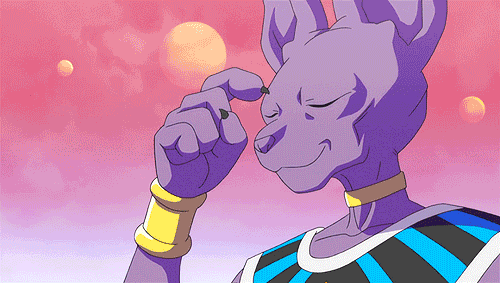
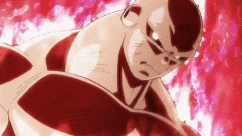
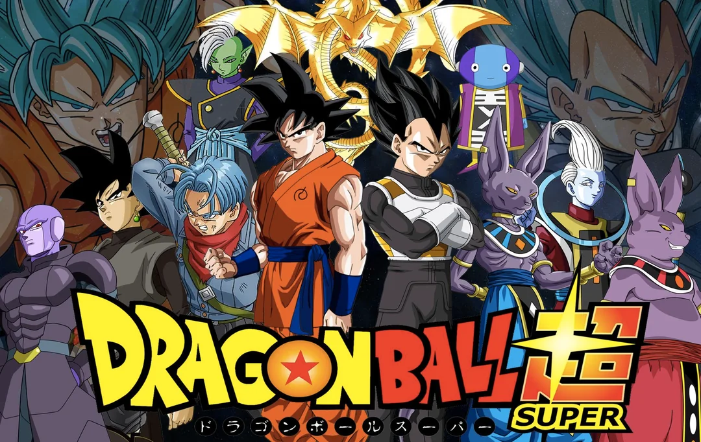
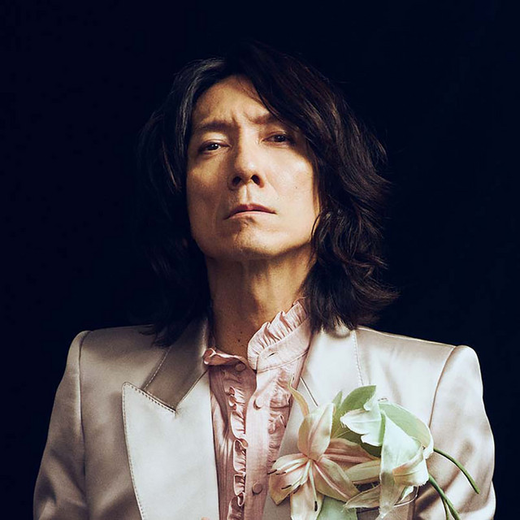
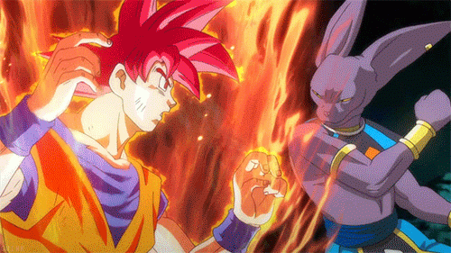
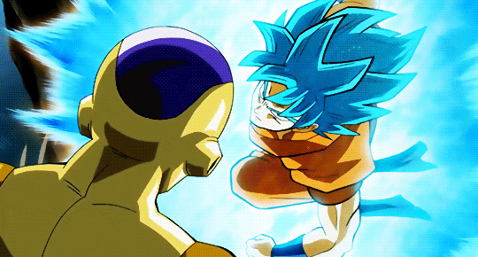
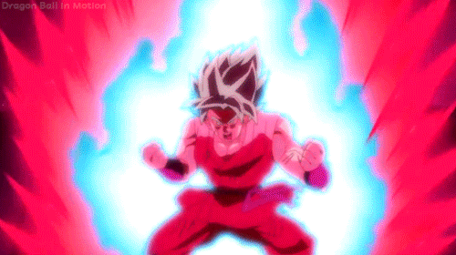
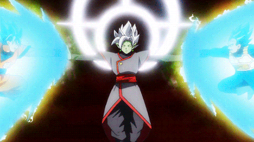
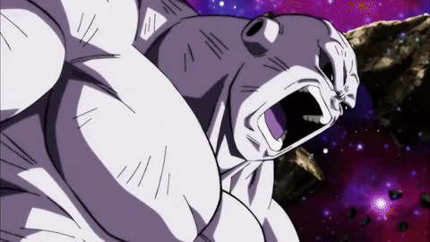

PERSONAJES DRAGON BALL GT:
Goku

El protagonista principal de la saga. Un Saiyajin que se caracteriza por su deseo de superarse y de luchar contra oponentes poderosos. En Dragon Ball Super, Goku alcanza nuevos niveles de poder, como el Ultra Instinct.
Vegeta

El príncipe de los Saiyajins y uno de los guerreros más poderosos del universo. Aunque al principio es rival de Goku, más tarde se convierte en su aliado y amigo.
Bills
El Dios de la Destrucción del universo 7. Es un ser extremadamente poderoso que tiene la misión de destruir planetas para mantener el equilibrio del universo.
Freezer

Frieza es uno de los villanos más emblemáticos de la saga, conocido por su cruel comportamiento y su dominio sobre el universo 7 en su momento.
Jiren
Jiren es un miembro del Torneo de la Fuerza y uno de los luchadores más poderosos de los universos en Dragon Ball Super. Perteneciente al universo 11, Jiren es un guerrero extremadamente fuerte y serio que se convierte en uno de los principales rivales de Goku durante el Torneo de la Fuerza.
N*EPISODIOS DE DRAGON BALL SUPER:
Dragon Ball Super tiene un total de 131 episodios. La serie comenzó a emitirse en Japón en 2015 y concluyó en 2018. A lo largo de esos episodios, se cubren varias sagas clave, como la Saga de la Batalla de los Dioses, la Saga de la Resurrección de F, el Torneo de la Fuerza y la Saga de Goku Black (Futuro Trunks). Es importante notar que Dragon Ball Super continúa expandiéndose en la franquicia con películas como Dragon Ball Super: Broly (2018) y la serie Dragon Ball Super: Super Hero, que continúa la historia con nuevos episodios y contenido adicional.
CREADOR DE DRAGON BALL Super:

Dragon Ball Z fue creado por Akira Toriyama, quien es el autor del manga original de Dragon Ball. La serie de Dragon Ball Z es una continuación del manga y la serie de televisión "Dragon Ball", y fue producida por Toei Animation. Aunque Akira Toriyama es el creador principal, la adaptación animada fue dirigida por diversos directores de Toei Animation a lo largo de su emisión. Akira Toriyama fue responsable del diseño de personajes, la historia original y la creación del universo de Dragon Ball. Toei Animation se encargó de la producción de la serie animada, lo que implicó la adaptación de la historia y su desarrollo en formato televisivo. Dragon Ball Z sigue la historia de Goku, después de que creció y se enfrenta a poderosos enemigos, incluyendo los Saiyajins, Freezer, Cell y Majin Buu.
INTRO: OPENING DRAGON BALL S
CRADOR DEL OPENING:
La intro de Dragon Ball Super en su versión japonesa fue creada por el compositor Takafumi Iwasaki, quien ha trabajado en la música de varias series de anime. La canción del opening se titula "Chōzetsu☆Dynamic!" (超絶☆ダイナミック！) y fue interpretada por el cantante Kazuya Yoshii. Esta canción fue muy popular por su energía y su capacidad para capturar la emoción y el espíritu de la serie. En cuanto a la versión en español de Dragon Ball Super, la canción de apertura se titula "¡Gokú, el luchador!" y fue interpretada por José Luis Romero. El tema "Chōzetsu☆Dynamic!" es uno de los openings más energéticos de la serie Dragon Ball y fue utilizado al inicio de la emisión de Dragon Ball Super en 2015. Si deseas más detalles sobre la canción o su creador, te recomiendo que busques en fuentes especializadas de anime.

SAGAS Y VILLANOS DE DBS:
1.Saga de la Batalla de los Dioses:
Introducción a Beerus, el Dios de la Destrucción, quien llega a la Tierra en busca del Super Saiyan Dios. Goku alcanza este poder para enfrentarse a Beerus, evitando la destrucción del planeta.
2. Saga de la Resurrección de F:
Esta saga tiene lugar en el planeta Namek, donde Goku y sus amigos luchan contra el tirano Freezer, quien busca las Esferas del Dragón para obtener la inmortalidad.
3. Saga del Torneo Multiversal (Torneo de los 12 Universos):
Goku y sus amigos compiten en un torneo entre los universos 6 y 7. Aquí Goku se enfrenta a Hit, un poderoso asesino.
4.Saga del Futuro de Trunks:
Trunks viaja al pasado en busca de ayuda debido a la amenaza de Black Goku, una versión malvada de Goku, y Zamasu, un Kaioshin del futuro. Juntos luchan para salvar su futuro de la destrucción.
5.Saga de la Supervivencia del Universo (Torneo de la Fuerza)
Zeno-sama organiza un torneo donde los universos luchan por su supervivencia. Goku lidera su equipo para defender el universo 7 contra guerreros de otros universos, enfrentándose a Jiren y otros oponentes.